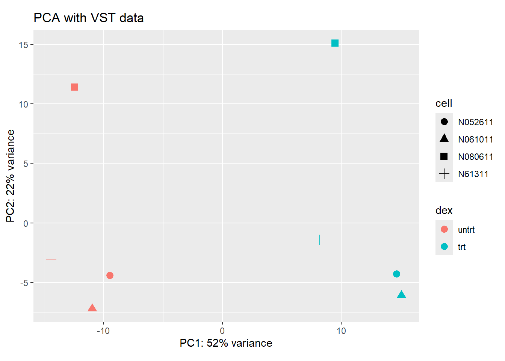
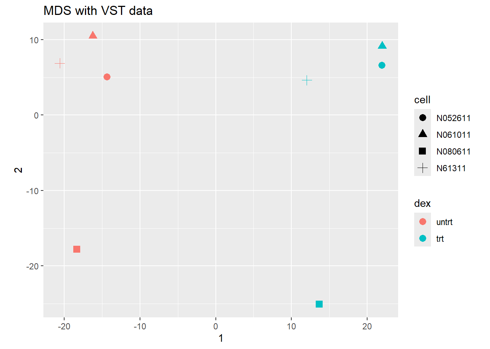
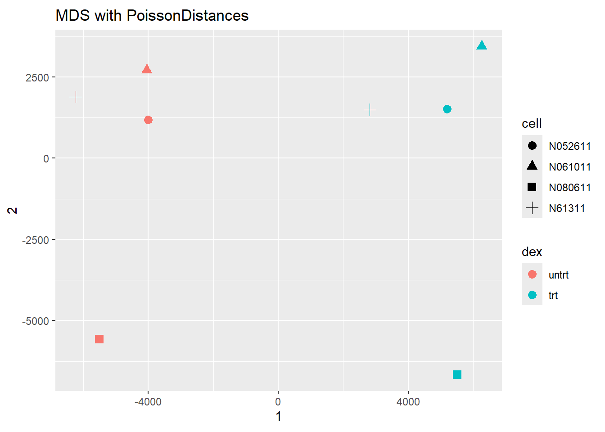

Previous student report based on the rnaseqGene Bioconductor workflow
Overview
This Quarto document reproduces, as an academic exercise, the Bioconductor workflow package rnaseqGene using the recommended alternative pipeline utilizing Salmon for transcript quantification (Michael I. Love et al. 2016). The rnaseqGene workflow package uses the data in the airway package to demonstrate an end-to-end workflow for an RNA sequencing experiment (Himes et al. 2014).
The recommended alternative pipeline demonstration will use Salmon for transcript quantification of the FASTQ reads. The quantification files produced by Salmon are loaded into the package tximeta, which will provide genomic annotation and create the Bioconductor friendly data container SummarizedExperiment (Michael I. Love et al. 2020). The SummarizedExperiment data container are loaded into DESeq2 to create the data object DESeqDataSet, which is used for analysis.
Experimental Data
Included with the airway package are eight BAM files (each BAM file is a subset of the total reads for demonstration purposes), a small subset of a gene transfer format (GTF) annotation file relevant for the subset BAM files, a full count matrix corresponding to all experimental data, a sample table in CSV format, and two FASTQ files (Himes et al. 2014).
The experimental data comes from Human airway smooth muscle (HASM) cell lines isolated from 4 healthy white male aborted lung transplant donors. The cell lines were treated with Dexamethasone or a control vehicle for 18 hours.
Preparing quantification input to DESeq2
The recommended pipeline is to use Salmon to quantify transcript abundance. The rnaseqGene workflow vignette recommends this guide https://combine-lab.github.io/salmon/getting_started/ to use Salmon to produce plain-text, tab-separated quant.sf files. Quant.sf files contain the following: Name of target transcript, length of target transcript in nucleotides, EffectiveLength, Transcripts Per Million (TPM), and NumReads (Salmon’s estimate of the number of reads mapping to each transcript that was quantified).
Snakemake
The following Snakemake file text is provided by the rnaseqGene vingette.
The Snakemake file requires the eight runs with the listed SRR IDs to be downloaded from the Sequence Read Archive and for an index to be created at:
/path/to/gencode.vVV_salmon_X.Y.Z
VV stands for the specific release of the reference transcripts (e.g. 47) and X.Y.Z stands for the specific release of Salmon.
The Salmon index can be created with the command:
salmon index -t transcripts.fa.gz -i name_of_index
The rnaseqGene vingette recommends the use of genomic decoy sequences (see Salmon’s documentation) to improve quantification accuracy, as demonstrated by Srivastava et al (2020). The human reference transcriptome can be obtained from GENCODE.
Reading in data with tximeta
The transcript quantification files produced by Salmon can be brought into the bioconductor environment using tximeta to produce the SummarizedExperiment data object (Michael I. Love et al. 2020). To demonstrate with the airway package (Himes et al. 2014), the following code loads the airway library, identifies and assigns the variable “dir” to represent the local directories that contain the quant.sf Salmon files. The airway package only provides two quant.sf files for runs SRR1039508 and SRR1039509 for demonstrative purposes.
tximeta requires a CSV or TSV sample table. The airway package provides an example of a sample table containing important sample identifying information, such as Sample Name, treatment/condition, sequencing run, and other conditions and identifying information for each sample.
However, tximeta requires a sample table with at least two columns provided as: “files” and “names”. “files” will contain a pointer to the quant.sf files. “names” will contain unique names that identify samples.
The sample table provided by airway does not contain these two required columns (“names” and “files”). We create these required columns with the following code:
##makecoldata#this code for vignette loading salmon quant on select samplescoldata <- coldata[1:2,]coldata$names <- coldata$Runcoldata$files <-file.path(dir, "quants", coldata$names, "quant.sf.gz")file.exists(coldata$files)
Once our sample table has been updated properly to point to the quant.sf files and the sample name for each file, we can run tximeta to produce the SummarizedExperiment object with this simple code:
The SummarizedExperiment object contains 205,870 rows and 2 columns. The rows correspond to transcript level data, indicated by the rownames being the Ensembl transcript ID.
SummarizedExperiment object
The components of a SummarizedExperiment object are diagrammed with the following code:
The SummarizedExperiment object contains three component parts: rowRanges, colData, and assay. The colData component contains sample annotations, such as sample ID. The assay component contains the matrix of counts (e.g. “counts”, “abundance”, “length”). The rowRanges contains annotation for corresponding row in the assay part (e.g. seqnames, genomic coordinates, strand, tx_id).
summarize to gene level
Since we will be performing gene-level analysis, we convert the transcript level data to gene level data with tximeta with the following code:
assignRanges='range': gene ranges assigned by total range of isoforms
see details at: ?summarizeToGene,SummarizedExperiment-method
summarizing abundance
summarizing counts
summarizing length
Examination of gse with dim() and head(rownames()) shows that the number of rows and columns remains unchanged. The rownames have changed from the Ensembl transcript ID to Ensembl gene ID, indicating the assay contains gene level data instead of transcript level data now.
The full gse contains 58294 rowsand 8 columns. The rownames are gene_id and the colnames are SRR IDs. Data about the genes are contained in the rowRanges component, phenotypic data about the samples are contained in the colData component, and the count matrices are contained in the assay component.
The colData for gse contains sample identifying information provided by the sample table from earlier.
DESeqDataSet
This analysis will use the DESeq2 package for differential expression (Michael I. Love, Huber, and Anders 2014). DESeq2 uses the DESeqDataSet object that is built on top of the SummarizedExperiment object.
The donor and condition variables in colData can be examined directly with $ subsetting of the SummarizedExperiment (or DESeqDataSet).
dex is a factor with 2 levels. We rename the levels of dex; untrt replaces Untreated and trt replaces Dexamethasone. Using magrittr(Bache and Wickham 2014), the levels of dex are ordered properly with relevel so that untrt is the first level. (dex was already properly ordered, so this example shows how to relevel the factor if not already properly ordered)
##renamelevelslevels(gse$dex)
[1] "Untreated" "Dexamethasone"
# when renaming levels, the order must be preserved!levels(gse$dex) <-c("untrt", "trt")##gsedexlibrary("magrittr") gse$dex %<>%relevel("untrt")gse$dex
[1] untrt trt untrt trt untrt trt untrt trt
Levels: untrt trt
We can view how many millions of fragments per sample could be mapped:
using counts and average transcript lengths from tximeta
We specify the fixed-effects experimental design within the DESeqDataSet() call by using R’s formula notation as an argument (i.e. ~ group + treatment + group:treatment). For our analysis, we are testing for the effect of dex (treatment) while controlling for cell (donor). Our supplied design is thus design = ~ cell + dex.
Exploratory analysis and visualization
Prefiltering
We remove rows that contain no or nearly no genomic expression with the following code:
The prefiltering filters out rows (genes) that contain less than 10 fragments for their respective gene in fewer samples than the smallest group size (4 in this case). Prefiltering has reduced the number of rows in the gse from 58294 to 16637. Additional weighting/filtering to improve power is applied at a later step.
VST and rlog both improve the homogeneity of variance compared to a traditional log transformation approach of taking the logarithm of the normalized count values and adding a pseudo-count, e.g. log2(x + 1). VST is recommended for medium to large data sets, while rlog works well on small data sets and when a wide range of sequencing depth across samples. VST and rlog transformations are not intended for differential testing. VST and rlog return a DESeqTransform object. Transformed values are stored in the assay component, but are no longer counts.
Sample distances
To assess similarity between samples, the Euclidean distance between samples is calculated using the VST data. The R function dist() expects the samples to be rows and dimensions to be columns. The assay componment with VST data (VSD) needs to be transposed prior to being provided to the dist()
Heatmap (Pheatmap) sample distances using variance stabilizing transformation
The distances can be visualized using a heat map produced by the pheatmap package (Kolde 2010).
The sampleDists is provided to the clustering_distance argument of the pheatmap() function. The rownames are changed for convenience and a blue color palette is used for the heat map.
The heat map of sample to sample distances using VST values indicates that samples with the same treatment condition are more similar (less distance) than samples from different treatment groups.
Heat map sample distances using Poisson distance
Sample to sample distances using the Poisson distance can be represented in a heat map using the PoiClaClu package (Daniela Witten 2011). The PoissonDistance() function uses original count matrix values and requires the samples to be provided as rows. The dds counts need to be transposed prior to being provided.
library("PoiClaClu")#transpose dds sample columns to sample rows (original count matrix, not normalized, use dds not vsd or rld)poisd <-PoissonDistance(t(counts(dds)))#plot heatmapsamplePoisDistMatrix <-as.matrix( poisd$dd )rownames(samplePoisDistMatrix) <-paste( dds$dex, dds$cell, sep=" - " )colnames(samplePoisDistMatrix) <-NULLpheatmap(samplePoisDistMatrix,clustering_distance_rows = poisd$dd,clustering_distance_cols = poisd$dd,col = colors)
percentVar <-round(100*attr(pcaData, "percentVar"))#use ggplot to construct PCA plot after returning loadingsggplot(pcaData, aes(x = PC1, y = PC2, color = dex, shape = cell)) +geom_point(size =3) +xlab(paste0("PC1: ", percentVar[1], "% variance")) +ylab(paste0("PC2: ", percentVar[2], "% variance")) +coord_fixed() +ggtitle("PCA with VST data")

The PCA plots indicate treatment condition as the greatest source of variance. PC1 accounts for 52% of the explained variance and clearly separates the samples by treatment condition. PC2 accounts for 22% of the explained variance, with a clear separation of samples by donor on PC2. Examining the principal component loadings, the samples with trt treatment condition (dex) clearly show their presence contributing to PC1 due to the positive loadings. The untrt samples have negative loadings of similar magnitude to the positive loadings of trt for PC1, clearly showing their absence contributes to PC1. Interestingly, some donors trt loadings have greater magnitude contributing to PC1, while some donors untrt samples have negative loadings of greater magnitude contributing to PC1 than their trt paired sample.
Multidimensional scaling (MDS) requires a matrix of distances instead of matrix of counts.
#multidimensional scaling (MDS) function in base R. #This is useful when we don’t have a matrix of data, but only a matrix of distances#MDS plot using VST datamds <-as.data.frame(colData(vsd)) %>%cbind(cmdscale(sampleDistMatrix))ggplot(mds, aes(x =`1`, y =`2`, color = dex, shape = cell)) +geom_point(size =3) +coord_fixed() +ggtitle("MDS with VST data")

MDS plot using VST data
# MDS with PoissonDistancesmdsPois <-as.data.frame(colData(dds)) %>%cbind(cmdscale(samplePoisDistMatrix))ggplot(mdsPois, aes(x =`1`, y =`2`, color = dex, shape = cell)) +geom_point(size =3) +coord_fixed() +ggtitle("MDS with PoissonDistances")

MDS plot using PoissonDistances. MDS visualization using Poisson distances shows similar clustering patterns as the VSD, confirming consistency of results across distance metrics.
Differential expression analysis
DESeq2 function tests for differential expression using negative binomial generalized linear models informed by estimations of dispersion and estimations of size factors.
out of 16637 with nonzero total read count
adjusted p-value < 0.1
LFC > 0 (up) : 2362, 14%
LFC < 0 (down) : 2019, 12%
outliers [1] : 0, 0%
low counts [2] : 646, 3.9%
(mean count < 12)
[1] see 'cooksCutoff' argument of ?results
[2] see 'independentFiltering' argument of ?results
#if using lower False Discovery Rate threshold, supply new alpha to results function#res.05 <- results(dds, alpha = 0.05)#table(res.05$padj < 0.05)
res$log2FoldChange is the effect size estimate, informing us how the trt condition may have changed genomic expression. lfcSE is the standard error estimate for the change in effect size estimate (log2FoldChange) ### Multiple testing
#num of sig and non sig log fold changesum(res$pvalue <0.05, na.rm=TRUE)
[1] 5069
sum(!is.na(res$pvalue))
[1] 16637
#num of sig log fold change after threshold adjustmentsum(res$padj <0.1, na.rm=TRUE)
[1] 4381
#subset and sort log2 change estimate of strongest down and up regulationresSig <-subset(res, padj <0.1)head(resSig[ order(resSig$log2FoldChange), ])
res <-lfcShrink(dds, coef="dex_trt_vs_untrt", type="apeglm")
using 'apeglm' for LFC shrinkage. If used in published research, please cite:
Zhu, A., Ibrahim, J.G., Love, M.I. (2018) Heavy-tailed prior distributions for
sequence count data: removing the noise and preserving large differences.
Bioinformatics. https://doi.org/10.1093/bioinformatics/bty895
Thus far our gene level data corrosponds to Ensembl gene IDs. Utilizing Bioconductor’s annotation pacakges, alternative gene names can be mapped to potentially improve interpretation. Load the AnnotationDbi and org.Hs.eg.db package (Hervé Pagès 2017; Carlson 2017).
The org.Hs.eg.db package name can be deciphered as organism annotation package (“org”) for Homo sapiens (“Hs”), organized as an AnnotationDbi database (“db”), using Entrez Gene IDs (“eg”) as primary key. The following code produces a list of available key types:
Use mapIds() function to add individual columns to a results table. The results’ table uses rownames as a key, specifying keytype=ENSEMBL. mapsIds() uses the column argument to identify which information we want. The multiVals argument handles potential multiple values for a single input. The following code adds a column for gene symbol and a column for Entrez ID.
using 'apeglm' for LFC shrinkage. If used in published research, please cite:
Zhu, A., Ibrahim, J.G., Love, M.I. (2018) Heavy-tailed prior distributions for
sequence count data: removing the noise and preserving large differences.
Bioinformatics. https://doi.org/10.1093/bioinformatics/bty895
Himes, Blanca E., Xiaofeng Jiang, Peter Wagner, Ruoxi Hu, Qiyu Wang, Barbara Klanderman, Reid M. Whitaker, et al. 2014. “RNA-Seq Transcriptome Profiling Identifies CRISPLD2 as a Glucocorticoid Responsive Gene That Modulates Cytokine Function in Airway Smooth Muscle Cells.”PloS One 9 (6): e99625. https://doi.org/10.1371/journal.pone.0099625.
Love, Michael I., Simon Anders, Vladislav Kim, and Wolfgang Huber. 2016. “RNA-Seq Workflow: Gene-Level Exploratory Analysis and Differential Expression.”F1000Research 4 (November): 1070. https://doi.org/10.12688/f1000research.7035.2.
Love, Michael I, Wolfgang Huber, and Simon Anders. 2014. “Moderated Estimation of Fold Change and Dispersion for RNA-Seq Data with DESeq2.”Genome Biology 15 (12): 550. https://doi.org/10.1186/s13059-014-0550-8.
Love, Michael I., Charlotte Soneson, Peter F. Hickey, Lisa K. Johnson, N. Tessa Pierce, Lori Shepherd, Martin Morgan, and Rob Patro. 2020. “Tximeta: Reference Sequence Checksums for Provenance Identification in RNA-Seq.” Edited by Mihaela Pertea. PLOS Computational Biology 16 (2): e1007664. https://doi.org/10.1371/journal.pcbi.1007664.